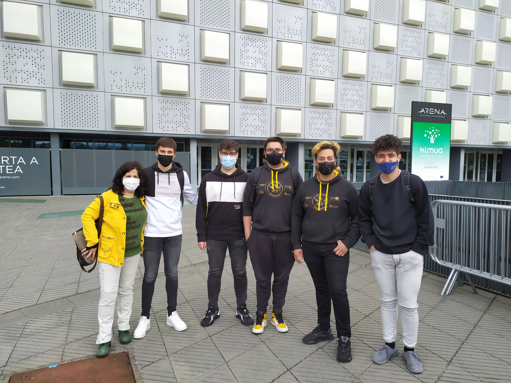
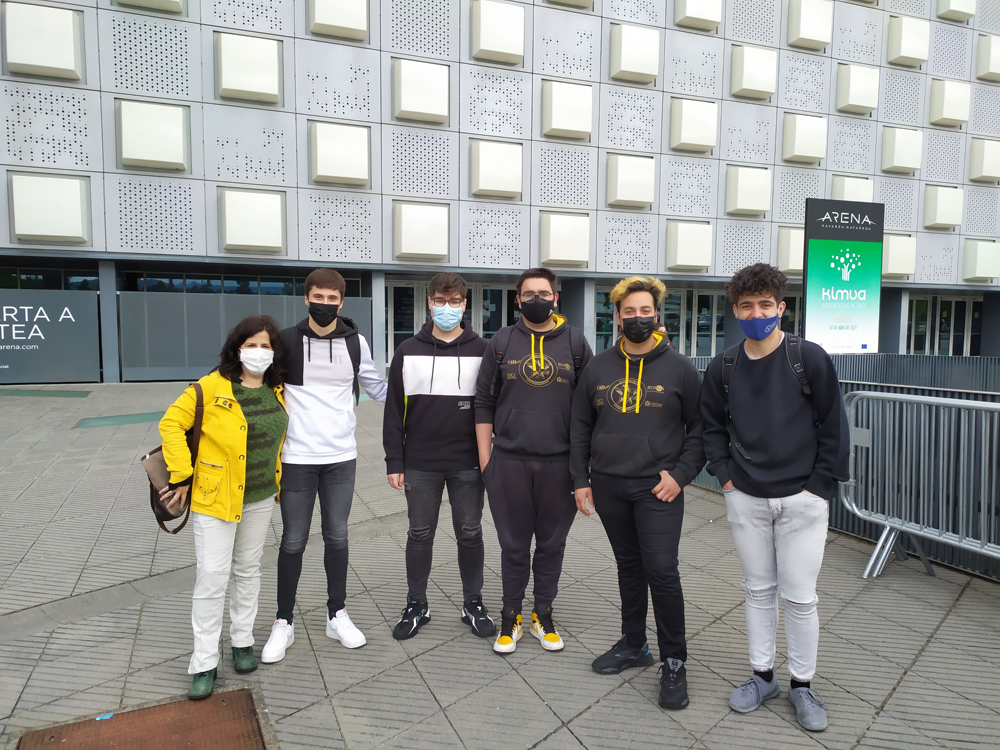
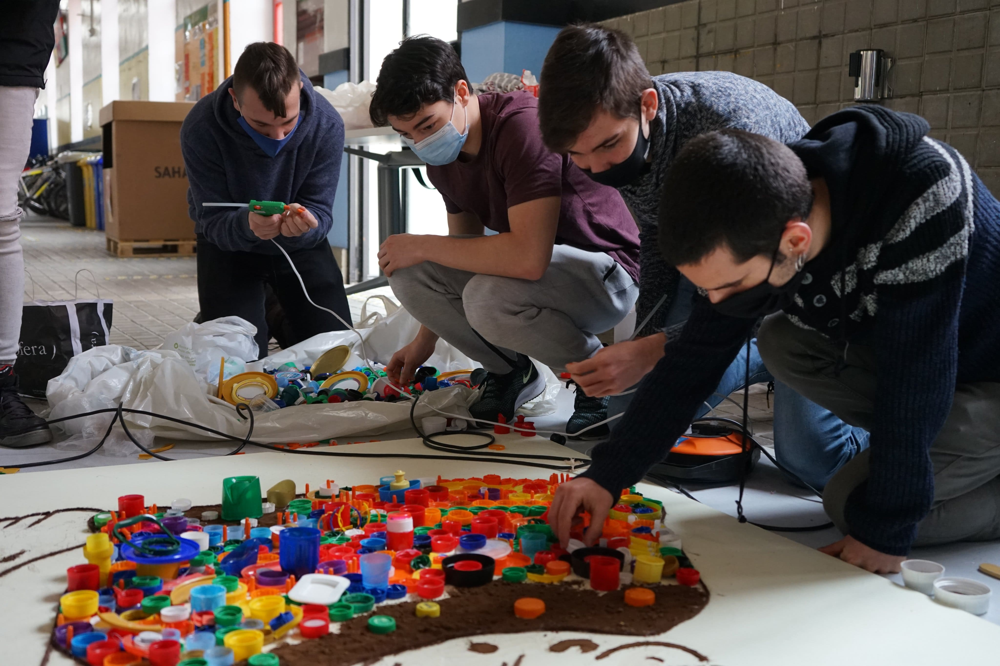
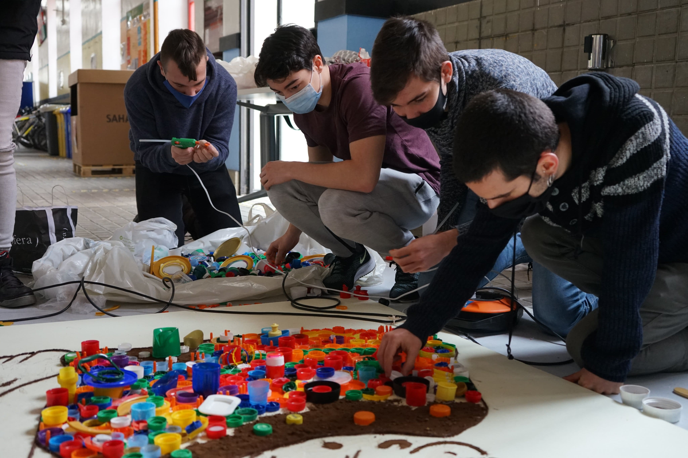
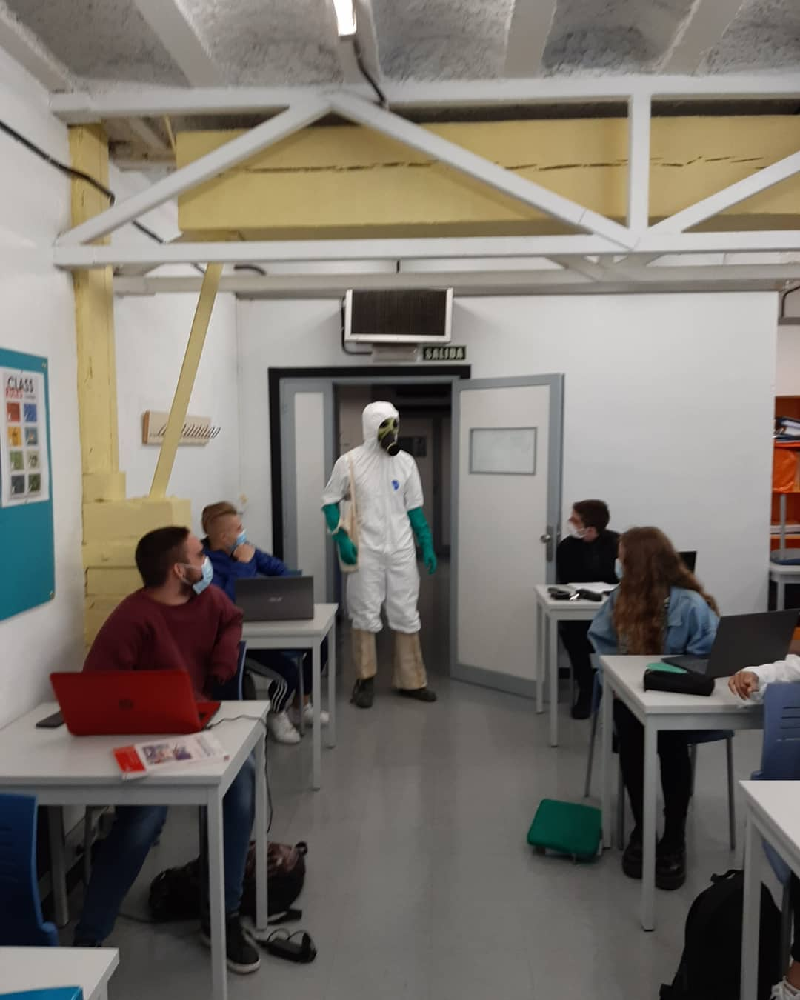
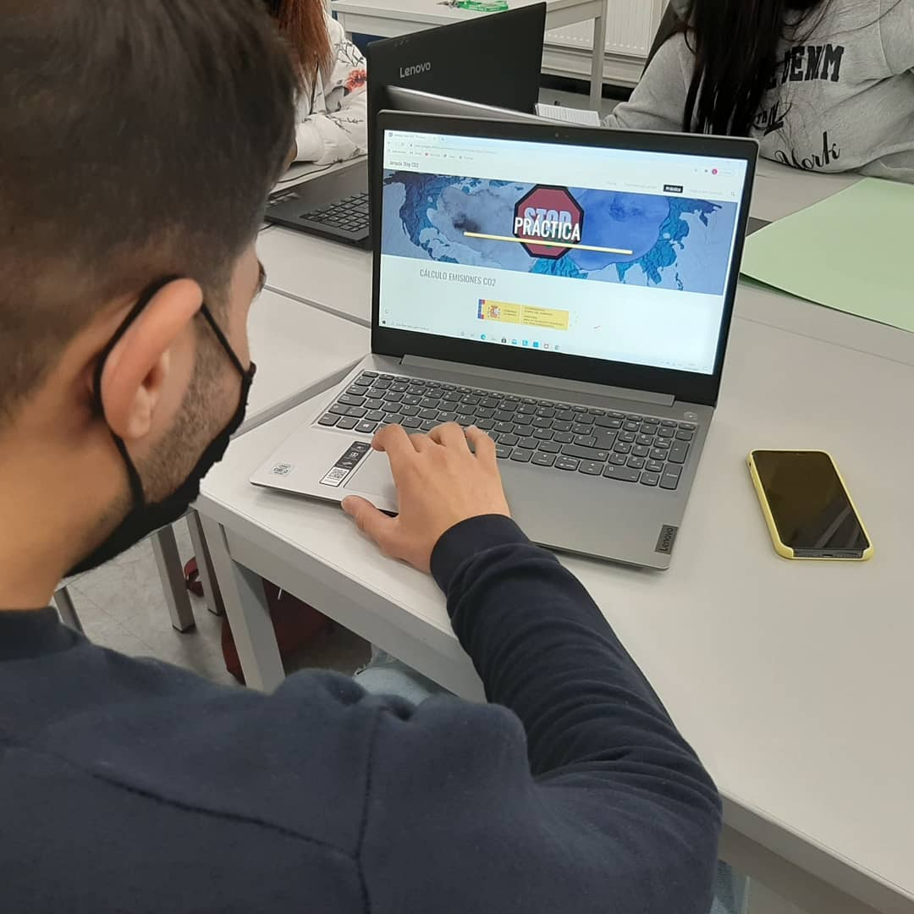
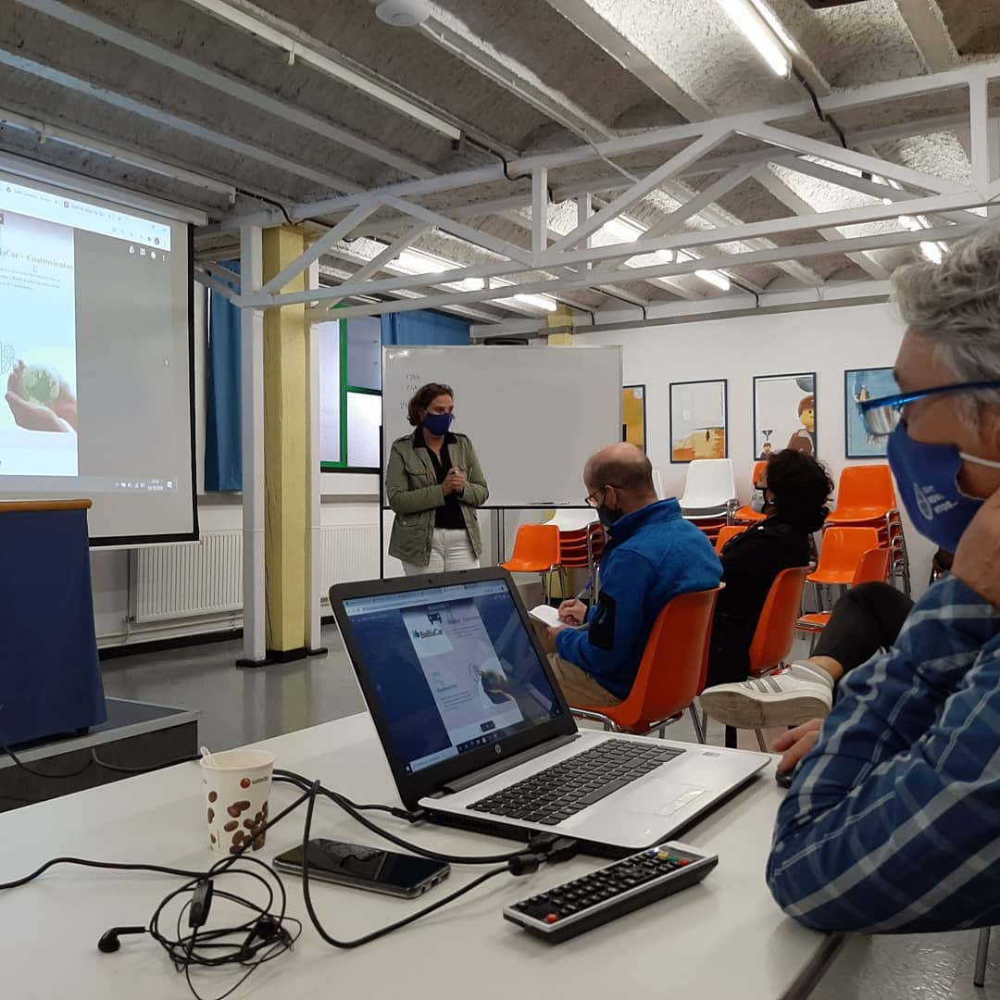
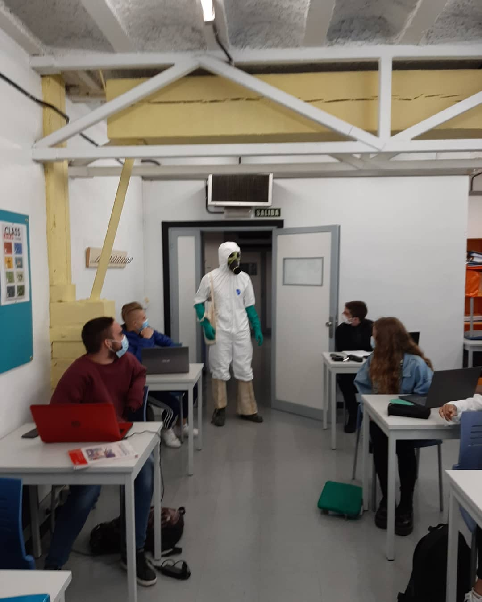
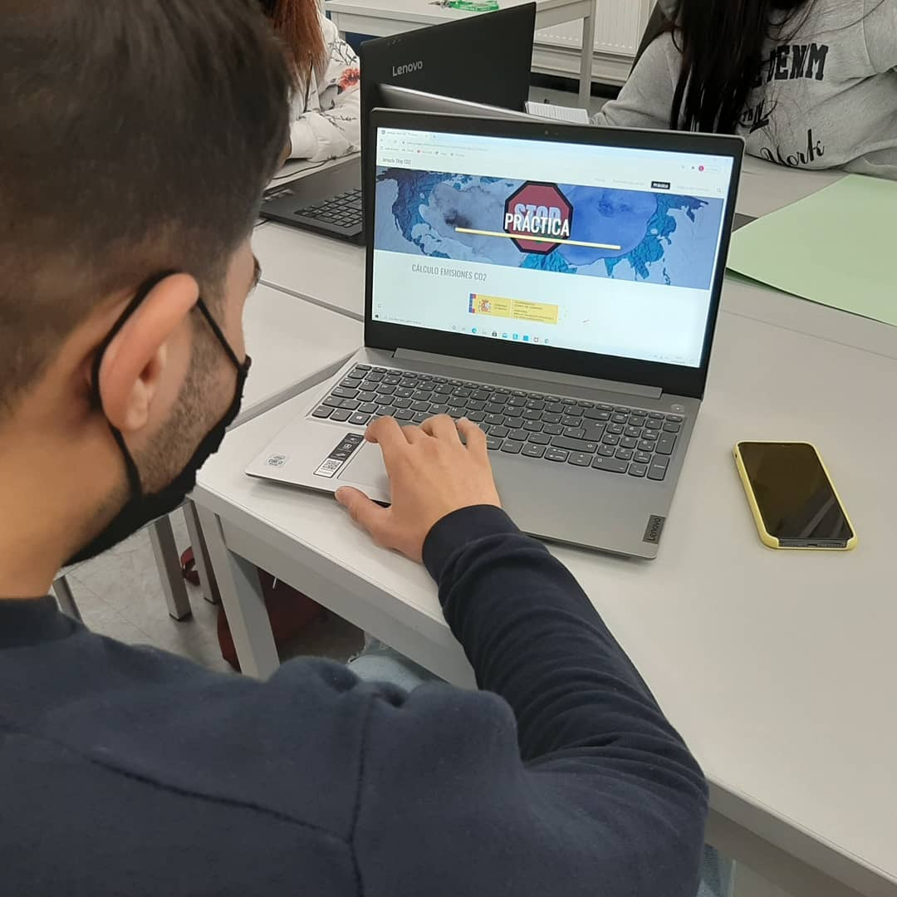
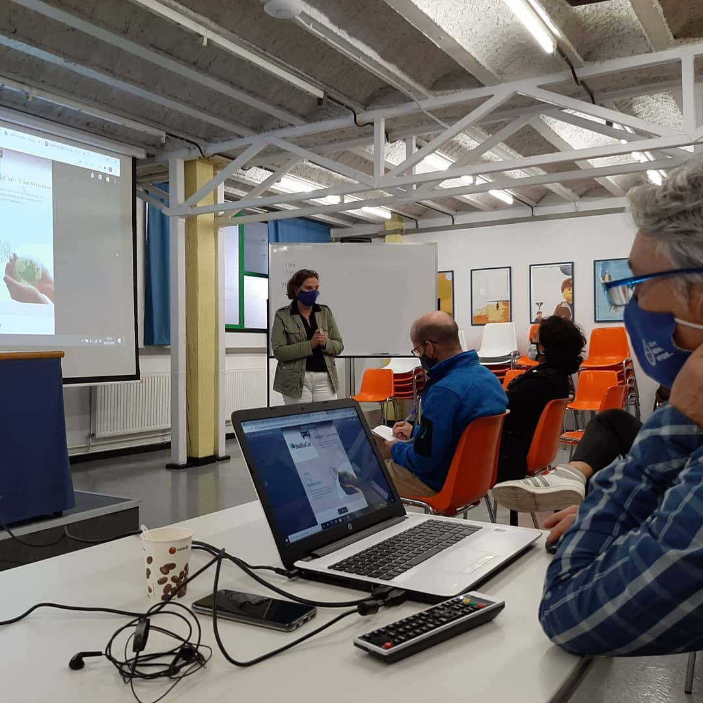

We propose a long-term Educational Project that must begin to be developed as soon as possible, giving priority to the most specific and closest actions, within the possibilities and limitations presented by the natural resources.
About the project
This project comes from Cuatrovientos social and environmental values and responsibilities, regarding the SDGs. At the same time we both assume the responsibility for our environmental impact and try to train future professionals to be responsible and engaged with the environment.
Before starting the project we had to analyse and identify how to implement it in our centre. Which made us apply for funding from the Erasmus + project , as part of the KA202 Key Action (Strategic Partnerships for the Exchange of Good Practice between European Schools).At the same time we had to look for partners to carry out this idea.
From the centre we have formed a team responsible for the project, made up of members of the different strands, which are: internationalisation, engagement and innovation, and an external partner.
Once the project had been analysed and identified, we had to establish a goal, "To be a neutral emission college" , At the same time we had to plan activities and workshops based on the CPBL methodology (Collaborative Project Based Learning), a teaching-learning methodology in which a project is proposed as a way to solve a real-life problem or situation (scenario) and which serves as a trigger for the students to reach their learning goals. (and which encourages students to achieve their learning goals.)
CI Cuatrovientos is a co-operative society that has full control over its business structure and records 100% of its emissions attributable to the activities over which it exercises control.
SDG OF THE PROJECT


We propose the participation of the educational community, through active processes and methodologies that develop critical thinking, collaboration and responsibility. Contributing to the creation of sustainable living habits.
.jpg)
Activities
In Cuatrovientos we are involved with the #StopCO2 project and the reduction of CO2 emissions. During the duration of the project we are doing several activities with the students, using the methodology CPBL
Awareness-raising Gymkhana
To introduce the school's students to the project, we carried out a gymkhana to help them discover the importance of protecting the environment.
STOP CO2 Day.
In the process of this activity, the students of the college learned the importance of protecting the environment by calculating the carbon footprint with a practical example at the school. We had the presence of different members of the Navarra Government and the assistance of Mikel Baztán (Sustainability Technician and Environmental defender).
100% green energy certification.
One of the things we have put in place is to obtain energy from certified green energy sources.
.jpg)
Cultural week.
During the first week of February , we organised different activities in the college about the environment and the project:
- SDG training for teachers
- Art Recylers: recycling through art
- Second-hand shop Fouroneshop
- Escape room SDGS
Planting 100 trees
Another step we are planning is the planting of 100 trees.

Event of 22 April. We are working to achieve our GOAL.
For the International Earth Day, the students' work to implement the actions of the CO2 reduction plan. And also:
- Plantation of our mini-forest at Cuatrovientos.
- Signing of an Environmental Statement with our European Partners.
Sustainable Challenges in the classrooms.
Learn about the different projects developed in the classroom that contribute to climate neutrality.
KIMUA 2021 CONFERENCE. Department of Education of Navarra.
Presentation of the STOP CO2 website in the Navarra Arena hall as an example of a project based on active learning.
Installation of a green energy production system in the building.
One of the things we have done to try to become Carbon Neutral is to install green energy production systems.
Sustainable Mobility.
Cuatrovientos celebrates the European Mobility Week promoting zero emission commuting among students and staff. More information
Kick-off International Meeting:
We host the European partners of the CFTrain in VET project in Pamplona to meet in person and plan new actions.
We encourage the development of critical thinking for the analysis of reality. To allow us to reduce and reconsider decisions that are related to consumption, to extend the useful life of what we have, to reuse it and to recycle it.
Find out more about
the Activities

Gymkhana of sensibilization
2.jpg)
Stop Co2 Day
.jpg)
Cultural Week

Cultural Week: Fouroneshop

Planting 100 trees

Earth Day 22 April.

Sustainable Challenges in the classroom.

KIMUA 2021 CONFERENCE.
Earth Day 22 April.
On 22 April, we celebrated Earth Day. We have organised a day to commemorate this event, with different activities such as the "Cycle and produce energy" (energy production point for self-consumption in Cuatrovientos) and the planting of a mini-forest at the college.
Related Material:
Sustainable Challenges in the classroom.
Learn about the different projects developed in the classroom that contribute to climate neutrality.
KIMUA 2021 CONFERENCE. Department of Education of Navarra.
Presentation of the STOP CO2 website in the Navarra Arena hall as an example of a project based on active learning.
Related Material:
Kick-off International Meeting.
We host the European partners of the CFTrain in VET project in Pamplona to meet in person and plan new actions.
Related Material:
 


.jpg)
.jpg)
.jpg)
.jpg) 



 





.jpg)
.jpg)

.jpg)


Report of the Stop CO2 Day
With the different activities of the StopCO2 Day, a report was written. Which included the results, objectives and compromises of the centre in relation to the project.